소개
인하대학교 인공지능융합연구센터 (이하 ”AI 센터”)에 오신 것을 환영합니다. 저희 AI 센터는 최첨단 GPU 서버 센터를 구축하여 A100, A6000, A40 등의 고성능 컴퓨팅 자원을 인하대학교 학생 및 교수님들, 그리고 기업체 및 인천시민 여러분께 무상으로 제공하고 있습니다. 이를 통해 인공지능 연구와 개발에 필요한 모든 고성능 계산 작업을 지원하고자 합니다.
작성된 튜토리얼을 통해 원활한 사용과 연구에 도움이 되기를 진심으로 바라겠습니다.
공지 수신 및 기술적인 문제나 사용법에 대한 질문이 있으시면, 디스코드 채널에 입장하여 연락주시기 바랍니다.
추가로, 긴급 공지 사항을 위해 만들어진 카카오오픈채팅방에 반드시 참여를 부탁드립니다.
System Overview
Simple Linux Utility for Resource Management (이하 “Slurm”) 을 통해 GPU 자원을 제공하고 있습니다. Slurm은 클러스터 환경의 자원 관리 시스템으로, 사용자의 요청에 컴퓨팅 자원을 할당합니다.
사용자는 자원을 할당 받은 후, Conda와 Singularity 컨테이너 솔루션을 통해 사용자가 원하는 개발 환경에서 컴퓨팅 자원을 사용 할 수 있습니다.
자원이 모두 사용 중일 때는 대기를 해야하며, 자원이 확보될 시 Slurm이 대기하고 있던 사용자에게 할당해줍니다.
12시간 이상 GPU 사용이 없을 시 작업이 취소 될 수 있습니다.
GPU 보유 현황
AI 센터에서는 11개의 GPU 서버 (56 GPUs) 를 제공하고 있습니다.
| GPU 타입 | GPU 메모리 | GPU 서버 대수 | 서버 당 GPU 카드 개수 |
|---|---|---|---|
| A100 | 40 GB | 4 | 4 |
| A40 | 48 GB | 3 | 8 |
| A6000 | 48 GB | 4 | 4 |
사용 방법
사용 절차
GPU 서버 사용 과정은 아래와 같습니다:
SSH 로그인을 통한 서버 접속 (Login Node) -> 코드 및 데이터 업로드 -> GPU 자원 신청 -> (환경 구축) -> GPU 사용
- 사용 가이드 영상
GPU 서버 접속
본인의 ID로 입력하여 SSH 연결하시길 바랍니다. 만약 본인의 ID가 "Gildong"이면,
ssh Gildong@165.246.75.159
사용자는 SSH 연결을 통해 Login Node 에 접속한 후, Slurm 시스템에게 GPU 자원 할당을 신청 할 수 있습니다.
SSH 연결은 Windows PowerShell, Ubuntu Terminal, MobaXterm 등의 프로그램을 통해 사용 할 수 있습니다.
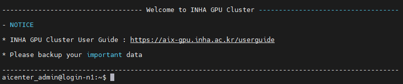
코드 및 데이터 업로드
파일 업로드는 본인 계정의 이름으로 된 폴더에 할 수 있습니다.
파일 업로드는 GPU 자원을 할당 받지 않고도 가능하며, GPU Node의 로컬 디스크를 사용할 경우 CPU 자원만 할당받아 사용하시면 됩니다.
- 데이터 업로드는 /shared/home/[본인 아이디] 경로 아래에 하시면 됩니다.
- 데이터 및 코드는 AI 센터의 NAS에 업로드됩니다.
자원 신청
사용자는 원하는 시간, GPU 및 CPU 자원 등을 명시하여 요청할 수 있습니다. 최대 7일의 사용 시간을 요청 할 수 있으며, 사용자들의 원활한 사용을 위해 AI센터에서는 사용 시간을 모니터링하고 있습니다.
지속적으로 자원 요청 정책을 지키지 않는 사용자의 경우, 작업의 취소 및 패널티가 부과 될 수 있습니다.
먼저 명령어로 자신의 파티션을 확인하기 (주의: `는 ' 와 다름)
sacctmgr show assoc format=User,Partition where user=`whoami`
파티션 p1의 사용자가 A100 GPU 2개를 1일 동안 요청하기
srun --gres=gpu:a100:2 -p p1 --time=1-00:00:00 -J cv_lab1 --cpus-per-task=20 --pty bash
파티션 p2의 사용자가 A6000 GPU 2개를 12시간 동안 요청하기
srun --gres=gpu:a6000:2 -p p2 --time=12:00:00 -J cv_lab1 --pty bash
파티션 p3의 사용자가 A40 GPU 2개를 2일 동안 요청하기
srun --gres=gpu:a40:2 -p p3 --time=2-00:00:00 -J cv_lab1 --pty bash
로그인을 한 후, 명령어로 GPU 할당 요청이 가능합니다.
srun --gres=gpu:<type>:<number> -p <partition> --time=<time> -J <jobname> --cpus-per-core <int> --pty bash
| 옵션 이름 | 구분 | 설명 | 상세 |
|---|---|---|---|
--gres=gpu:<type>:<number> |
GPU 선택 | GPU 타입 및 개수를 선택 | <type> : a100, a6000, a40 <number> : 1 ~ 4 사이의 정수(a40은 3까지) |
-p <partition> |
파티션 선택 | 사용자마다 파티션 지정됨 | <partition> : p1, p2, p3 아래 명령어로 자신이 속한 파티션 확인 sacctmgr show assoc format=User,Partition where user=`whoami` |
--time=<time> |
사용 시간 설정 | 사용 시간을 <time>만큼 지정 |
7일 (7-00:00:00) 또는 168시간 (168:00:00) 이하의 시간 |
-J <jobname> |
작업 이름 설정 | 작업의 이름을 <jobname>으로 설정 |
|
--mem <memory size> |
메모리 설정 | 사용하고자 하는 memory 자원 크기를 설정 | --mem 8G 와 같이 설정할 수 있음. |
- 자원 할당이 되었을경우
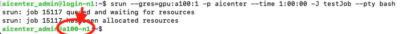
위와같이 host명이 login-n1에서 신청한 node의 이름으로 변경됨
- 자원 할당 대기중일 경우
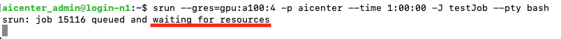
사용자가 많을 경우, 위와 같이 할당대기중이라는 안내가 나옴.
대기열 상태 확인
srun 또는 sbatch로 신청한 자원이 이미 사용되고 있을경우, 대기열에 들어갑니다. 이때 대기열을 확인하고싶다면 우측 명령어를 사용하면 됩니다.
신청한 작업의 ID를 squeue 명령어를 통해 확인하기(대기열 현황)
squeue
예상 시작시간 확인하기
scontrol show job [JOB ID] | grep StartTime
실행중인 모든 작업의 시작시간(StartTime), 종료시간(EndTime) 확인
scontrol show job | grep -e JobName -e StartTime
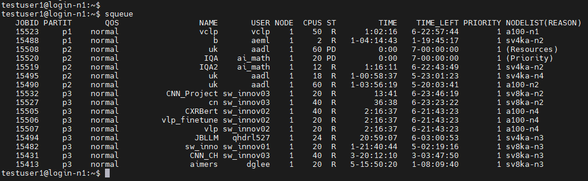
심화 튜토리얼
tmux를 이용한 세션유지
srun 명령어를 사용하여 자원을 받고나서 세션을 종료하면, 자원도 자동으로 반환됩니다. 이를 방지하고싶다면, tmux 또는 screen명령어로 세션을 유지할 수 있습니다.
tmux 실행
tmux
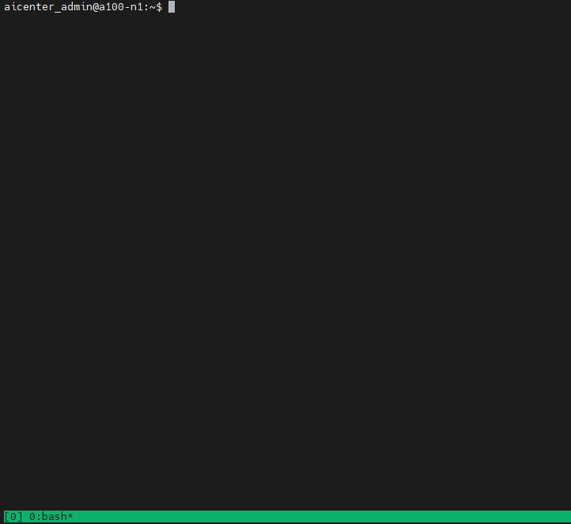
tmux 세션 유지 상태로 나가기 (백그라운드에서 실행시키고 싶은경우)
ctrl + b 를 누른후, d키를 누르기
tmux 세션 리스트 확인
tmux ls
tmux 목록중 원하는 세션에 다시 접속하기
tmux attach-session -t <session number>
tmux session을 완전히 종료하기
tmux kill-session -t <session number>
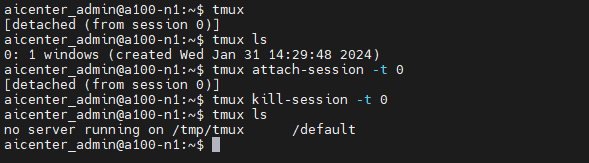
Jupyter notebook 실행
할당받은 GPU 노드에서 IP를 알아 낸 후, jupyter notebook을 웹에 띄웁니다.
다음 명령어 수행후, inet 165.2*..* 부분의 ip주소를 복사
ifconfig
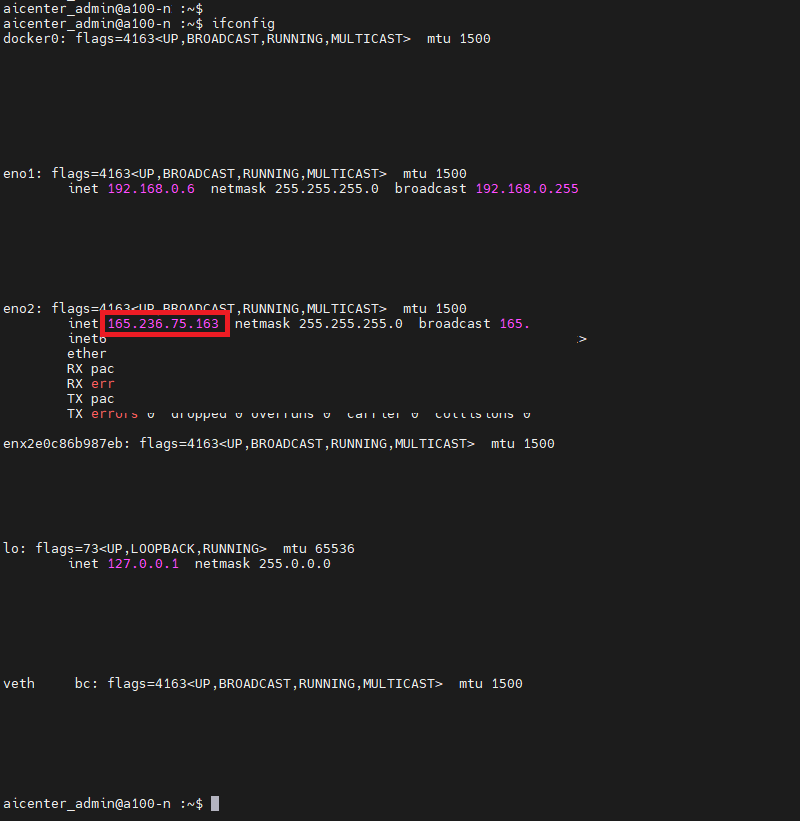
사용자화면에서, 빨간색 표시 영역에 해당되는 주소(165로 시작)를 복사
위에서 복사한 ip주소를 <165.2**.***.***> 부분에 넣고 port번호는 10100~10109 중 하나로 설정
jupyter-notebook --no-browser --ip=165.2**.***.*** --port=10108
Local Disk 활용법
학습 데이터의 크기가 클 경우, 네트워크 병목 현상으로 인하여 학습이 지연될 수 있습니다. 이런 경우, 각각의 GPU Node의 Local Disk를 이용하여 학습한다면 더 빠른 속도로 학습할 수 있습니다.
- 각 GPU 별 Node 명칭
A100 : a100-[n1~n4]
A6000 : sv4ka-[n1~n4]
A40 : sv8ka-[n1~n3]
Login node 접속 (port number : 22)
ssh [본인의 ID]@165.246.75.159
local 디렉토리 생성 및 데이터 복사
만약 이전에 저장한 GPU Node에서 작업하고 싶다면, -w [GPU node 이름] option을 이용해서 지정할 수 있습니다.
할당받은 GPU Node 각각의 Local disk경로로 이동
cd /raid
사용자 이름의 경로 생성
mkdir [user name]
자신의 home 경로에서 /raid/user_name 으로 데이터 복사
cp -R /shared/home/[user name]/data /raid/[user name]
학습에 필요한 image file을 local disk로 복사
cp /shared/public/images/<image name> /raid/<user name>
Singularity 실행시 Disk mount
- Singularity 실행시,
-B /raid옵션을 추가해 local disk를 mount 해줍니다. - 만약 위의 옵션을 사용하지 않으면 singularity환경에서
/raid경로를 볼 수 없습니다.
singularity exec -B /raid --nv /raid/[user name]/[image name] bash - local disk에 Mount가 잘 되었는지 확인하기 (singularity 접속상태에서)
ll /raid - Pytorch import 여부 확인
python3입력 후,import torch입력시 이상이 없는지 확인.
작업 완료 후 결과물 이동방법
모든 GPU node의 Local Disk의 경로는 /raid 로 되어있습니다. 그리고 각 GPU node의 DISK용량은 약 3TB 이상(GPU node별 약간의 차이가 있음)입니다.
계정 당 최대 300GB를 사용 할 수 있으며, 초과 사용 시, 다른 사용자를 위해서 디렉토리의 데이터는 삭제될 수 있습니다.
CPU만 할당받아 특정 Node에 접근하기
만약, a40 GPU 3번 node에 GPU할당 없이 접속하여 데이터를 가져오고싶다면 다음 명령어 사용.
srun —-mem=8G -p p1 -w sv8ka-n3 —-pty bash
- p 다음에 자신이 속한 partition, -w 다음에 원하는 gpu 명칭 (a100→a100, a40→sv8ka, a6000→sv4ka)
- 이후 cp 명령어를 사용하여 복사 (
cp -R /원본경로 /대상경로)
예)cp -R /shared/home/USER_NAME/data /raid/USER_NAME
위의 문서 외의 추가적인 사용법은 아래 공식 API문서에서 확인하실 수 있습니다.
Slurm Documentation
Singularity Documentation
개발 환경 구축
현재 GPU 서버에서는 miniconda 환경과 singularity 환경을 지원하고 있습니다.
별도의 docker환경은 제공하지 않지만, singularity image 변환을 통해 docker image를 사용하실 수 있습니다.
miniconda 환경 설정
설치 파일을 다운로드할 경로로 이동(to home directory)
cd ~
Miniconda 설치 파일 다운로드
wget https://repo.anaconda.com/miniconda/Miniconda3-latest-Linux-x86_64.sh
설치 파일 실행
bash Miniconda3-latest-Linux-x86_64.sh
Anaconda 설치 후 bash shell환경 재설정
source ~/.bashrc
conda 환경 생성 예시
conda create -n <환경 이름> python=<파이썬 버전>
conda 환경 실행
conda activate <환경 이름>
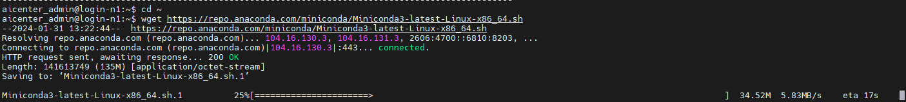
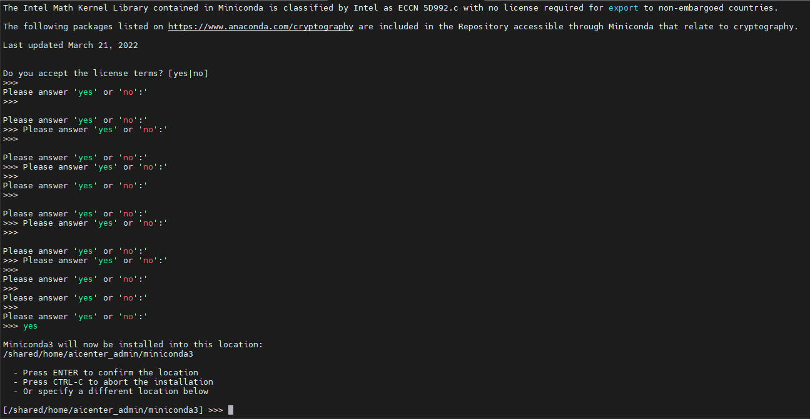
설치를 위해 Enter(기본 세팅으로 설치)입력
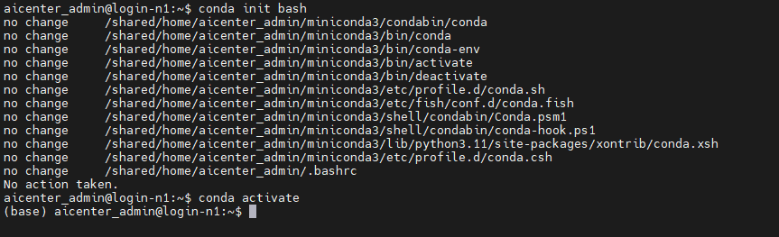
만약 설치 완료후 (base) 표시가 나오지않는다면 위의 그림처럼 실행
다음 명령어 수행 (conda 환경설정 오류가 발생했을 경우에만)
vi ~/.bashrc
vi 편집기에서 입력모드(i)로 들어가서 파일끝에 다음 명령어 추가 후 저장(esc, :wq)하기.
export PATH=~/miniconda3/bin:$PATH
환경변수 설정 반영
source ~/.bashrc
singulairty Container 활용
sif이미지를 사용해서 singularity container 실행
우측 코드를 참조하여 실행
공용폴더(/shared/public/images)로 이동
cd /shared/public/images
#공용폴더에서 사용할 Singularity 이미지(.sif)를 확인
ls
원하는 이미지가 있고, 이를 사용하려면 다음 명령어 실행
singularity exec --nv /shared/public/images/<imagefile name> bash
만약 이미지를 jupyter notebook으로 실행시키고 싶다면
singularity exec --nv /shared/public/images/<imagefile name> jupyter notebook --no-browser --ip=<위에서 복사한 ip주소> --port=<위에서 설정한 포트번호>
#singularity Container의 사용을 중단하고 싶다면
exit
Docker 이미지를 Singularity SIF로 변환하기 - Docker Hub 사용편
Docker 이미지 선택 : Docker hub에서 변환하고자 하는 Dokcer image의 url을 찾습니다.
이때, 본인이 원하는 이미지가 docker hub에 없다면 업로드 할 수 있습니다(회원가입 필요).
- docker hub 접속 (https://hub.docker.com/)
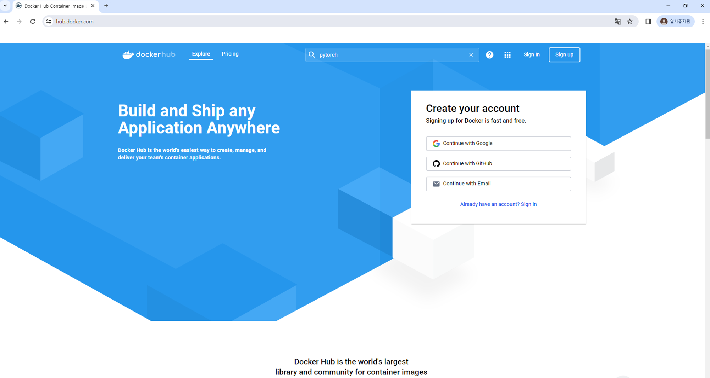
- 원하는 docker Image 검색 ( ※본인의 이미지를 docker hub에 올릴 수 있습니다※)
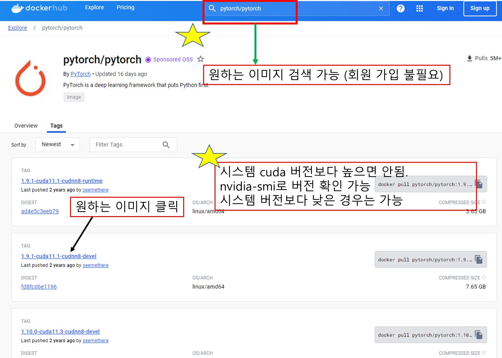
- 원하는 도커 이미지 선택
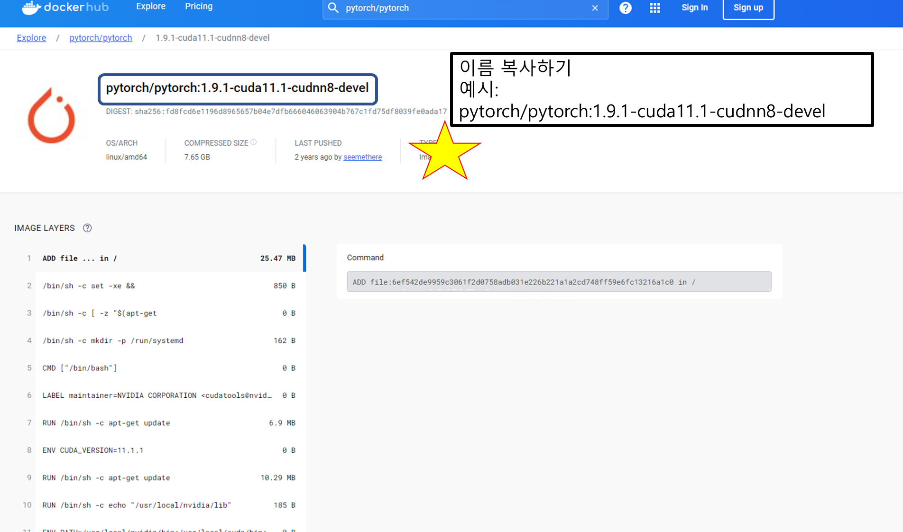Terminal로 복귀 및 변환 명령어 실행
예)singularity build ~/my_cuda_image.sif docker://pytorch/pytorch:1.9.1-cuda11.1-cudnn8-devel
- singularity build시, 시간이 오래걸릴 수 있습니다. 또한 singularity image파일을 저장할 경우 꼭 본인 계정의 home directory에 저장할 것을 부탁드립니다. (~/파일이름.sif)
/shared/public/images에 하지 않기
Docker 이미지를 Singularity SIF로 변환하기 - 로컬 이미지 사용편
- Docker 이미지 저장
- Singularity 명령어 실행
사용정책
파티션 정책
| 구분 | Class A, 참여교수 | Class B, 교내교수 | Class C, 외부 사용자 | 비고 |
|---|---|---|---|---|
| A100-1 | O | |||
| A100-2 | O | |||
| A100-3 | O | O | O | |
| A100-4 | O | O | O | |
| A6000-1 | O | |||
| A6000-2 | O | O | ||
| A6000-3 | O | O | O | |
| A6000-4 | O | O | O | |
| A40-1 | O | LocalDisk 권장 | ||
| A40-2 | O | O | O | LocalDisk 권장 |
| A40-3 | O | O | O | LocalDisk 권장 |
컴퓨팅 자원 정책
- 기본 정책
| 구분 | 정책 | 비고 |
|---|---|---|
| 작업 당 최대 작업 시간 | 7일 (7-00:00:00) | - 모든 작업에는 시간 지정 필수 - 추가 작업 시간 필요 시 별도 요청 |
| 계정 당 저장 공간 용량 제한 | 100G | - 추가 공간 필요 시 사유와 함께 요청 |
| 계정 당 최대 작업 개수 | 100개 | - |
| 사용 가능 최대 GPU 개수 | a100: 4개/ a6000:4개/ a40:4개 | a40:4개 초과 신청 할 경우, 취소 될 수 있음 |
| 사용 가능 최대 CPU Core 개수 | a100: 20개/ a6000:6개/ a40:10개 | * 할당받은 GPU수 * 까지 사용 가능 (a40 4개 사용 경우, 40개) |
- NAS 정책
| 구분 | 경로 | 접근 권한 | 비고 |
|---|---|---|---|
| 공용 저장 공간 | /shared/public | 모든 계정 가능 | - |
| 계정 별 저장 공간 | /shared/home/계정명 | 본인 계정만 가능 | 계정 당 100GB |
로컬 디스크 사용 정책
| 구분 | 경로 | 노드 | 비고 |
|---|---|---|---|
| 계정 별 저장 공간 | /raid/계정명 |
sv8ka[n1-n3], sv4ka[n1-n4],a100[n1-n4] | 계정 당 최대 300GB |